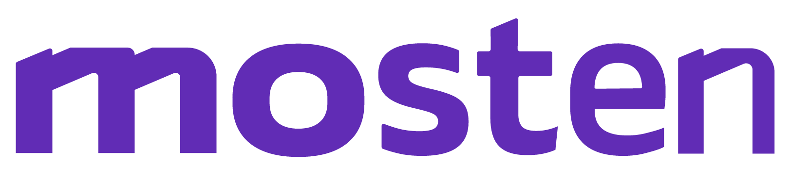

Sobre Mim
Formado em Técnico em
Informática, atualmente estou cursando o bacharelado de Engenharia da
Computação e sou integrante da . Sou um profissional
em desenvolvimento FullStack com experiência nas tecnologias essenciais para criar interfaces web
dinâmicas, atraentes e funcionais.